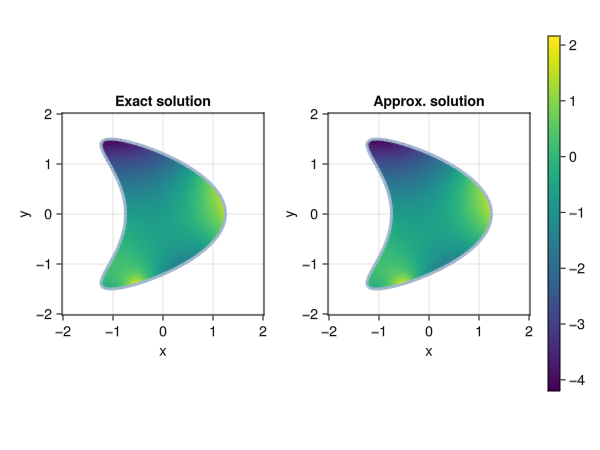

Inti
Installation instructions
Installing Julia
Download of Julia from julialang.org, or use juliaup installer. We recommend using the latest stable version of Julia, although Inti.jl should work with >=v1.6.
Installing Inti.jl
Inti.jl is not yet registered in the Julia General registry. You can install it using by launching a Julia REPL and typing the following command:
using Pkg; Pkg.add("Inti"; rev = "main")This will download and install the latest version of Inti.jl from the main branch. Change rev if you need a different branch or specific commit hash.
Overview
Inti.jl is a Julia package for the numerical solution of boundary and volume integral equations. It provides routines for assembling and solving the linear systems of equations that arise from applying a Nyström discretization method to an integral equation.
The package comes with a set of specialized and high-order integration routines for computing the singular and nearly-singular integrals that commonly appear in the discretization of various integral operators arising in mathematical physics. Inti.jl also provides various backends for accelerating the forward map of the integral operators, including wrappers for the FMM2D, FMM3D, and HMatrices.jl libraries.
While some familiarity with integral equations is assumed, the package strives to be accessible to users possessing only a basic understanding of integral equation methods. The most basic usage revolves around the four boundary integral operators of Calderon calculus, namely the single-layer, double-layer, adjoint double-layer, or hypersingular operators, for a given partial differential equation. For example, solving an interior Laplace equation in 2D with Dirichlet boundary condition, i.e.,
\[\Delta u = 0 \quad \text{in } \Omega, \quad u = g \quad \text{on } \Gamma\]
can be achieved e.g. by searching for the solution $u$ in the form of a double-layer potential:
\[u(\boldsymbol{r}) = \int_\Gamma \nabla_{\boldsymbol{y}}G(\boldsymbol{r},\boldsymbol{y}) \cdot \boldsymbol{n}(\boldsymbol{y}) \sigma(\boldsymbol{y})d\Gamma(\boldsymbol{y}),\]
where $\sigma$ is some (unknown) density function, and $G$ is the fundamental solution of the Laplace equation. In this case, the integral equation for $\sigma$ reads
\[ -\frac{\sigma(\boldsymbol{x})}{2} + \int_\Gamma G(\boldsymbol{x},\boldsymbol{y})\sigma(\boldsymbol{y})d\Gamma(\boldsymbol{y}) = g(\boldsymbol{x}) \quad \forall \boldsymbol{x} \in \Gamma,\]
which is a Fredholm equation of the second kind. In Inti.jl the problem above may look something like this:
using Inti, LinearAlgebra, StaticArrays
# create a geometry
geo = Inti.parametric_curve(0, 1) do s
return SVector(0.25, 0.0) +
SVector(cos(2π * s) + 0.65 * cos(4π * s[1]) - 0.65, 1.5 * sin(2π * s))
end
Γ = Inti.Domain(geo)
# create a mesh and quadrature
msh = Inti.meshgen(Γ; meshsize = 0.1)
Q = Inti.Quadrature(msh; qorder = 5)
# create the integral operators
pde = Inti.Laplace(;dim=2)
S, D = Inti.single_double_layer(;
pde,
target = Q,
source = Q,
compression = (method = :none,),
correction = (method = :dim,)
)
# manufacture an exact solution and take its trace on Γ
uₑ = x -> x[1] + x[2] + x[1]*x[2] + x[1]^2 - x[2]^2 + 0.5 * log(norm(x .- SVector(0.5, 1.5))) - 2 * log(norm(x .- SVector(-0.5, -1.5)))
g = map(q -> uₑ(q.coords), Q) # value at quad nodes
# solve for σ
σ = (-I/2 + D) \ g
# use the double-layer potential to evaluate the solution
𝒮, 𝒟 = Inti.single_double_layer_potential(; pde, source = Q)
uₕ = x -> 𝒟[σ](x)#7 (generic function with 1 method)The function uₕ is now a numerical approximation of the solution to the Laplace equation, and can be evaluated at any point in the domain:
pt = SVector(0.5, 0.1)
println("Exact value at $pt: ", uₑ(pt))
println("Approx. value at $pt: ", uₕ(pt))Exact value at [0.5, 0.1]: -0.21152442655333292
Approx. value at [0.5, 0.1]: -0.21152440617936705Alternatively, we visualize it as follows:
using Meshes, GLMakie # trigger the loading of some Inti extensions
xx = yy = range(-2, 2, length = 100)
fig = Figure()
inside = x -> Inti.isinside(x, Q)
opts = (xlabel = "x", ylabel = "y", aspect = DataAspect())
ax1 = Axis(fig[1, 1]; title = "Exact solution", opts...)
h1 = heatmap!(ax1, xx,yy,(x, y) -> inside((x,y)) ? uₑ((x,y)) : NaN)
viz!(msh; segmentsize = 3)
cb = Colorbar(fig[1, 3], h1)
ax2 = Axis(fig[1, 2]; title = "Approx. solution", opts...)
h2 = heatmap!(ax2, xx,yy, (x, y) -> inside((x,y)) ? uₕ((x,y)) : NaN, colorrange = cb.limits[])
viz!(msh; segmentsize = 3)
While the example above is a simple one, Inti.jl can handle significantly more complex problems involving multiple domains, different PDEs, three-dimensional geometries, and possibly requiring the use of acceleration techniques such as the Fast Multipole Method. The best way to dive deeper into Inti.jl's capabilities is the tutorials section. You can also find more advanced usage in the examples section.